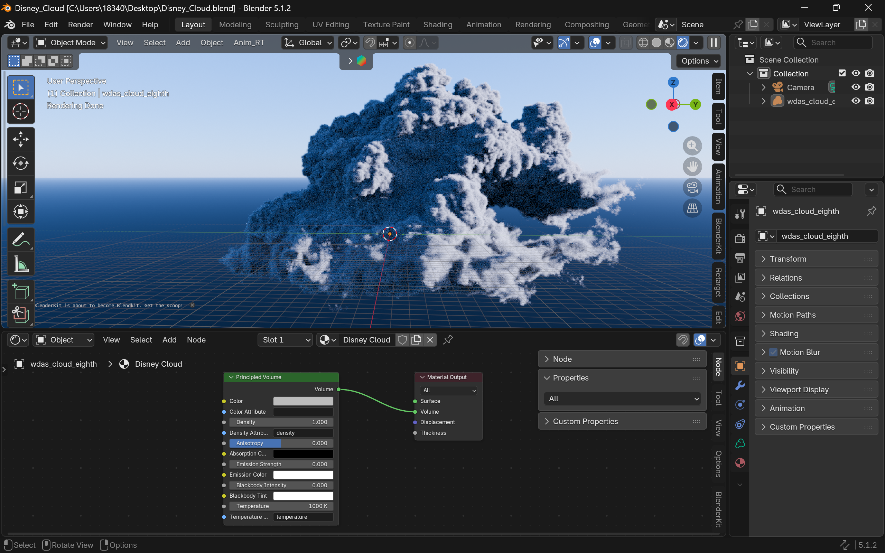
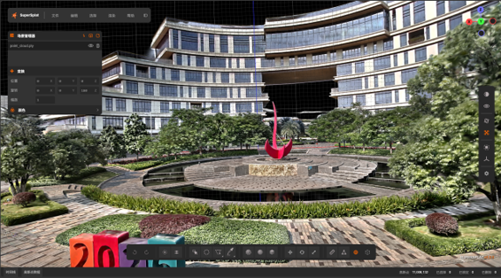

基于多模态模型的
三维动画生成流水线
项目简介
我们正在探索一条模块化流水线，将叙事文本、角色图像以及场景图像或视频转化为三维动画。六个工作方向涵盖前期实验、系统集成与评估。
核心问题是：如何让场景重建、角色动作、物理仿真与音乐协同工作，生成连贯的动画视频？
技术流程

场景参考用于构建环境，角色参考用于构建模型。智能体编剧将叙事转化为动作与音乐指令，场景仿真再整合环境和动作，输出视频。
六个工作方向在此基础上加入分镜与镜头规划、物理环境交互，以及共享记忆和时序控制，以协调生成的动作与音乐。
第 01 部分
分镜与镜头设计
将叙事转化为分镜、镜头构图、拍摄角度与时序安排，指导智能体编剧和动画制作。
第 02 部分
角色动作生成
将重建的角色模型与智能体的动作指令相结合，为场景仿真生成角色动作。
第 03 部分
物理特效仿真
构建物理仿真层，模拟运动物体扰动暖云体积时产生的云体变形、尾流与阻力，扩展整体流水线中的场景仿真环节。


研究范围依据 徐浩 的论文开题报告云与刚体耦合仿真第 2.1–2.3 节。以下方法与里程碑为研究计划，成果将随项目推进补充。
研究问题
实现刚体与暖云之间稳定、视觉可信的双向交互，需要哪些物理机制？
与整体流程的衔接
模块接收场景几何，以及动作阶段提供的时序一致的姿态、轨迹或交互事件，目标是在仿真场景中生成能够响应交互的云体和作用于运动物体的反作用力。
拟采用的方法
使用欧拉网格表示云的密度、速度与温度，通过局部动量交换耦合云与刚体，再研究浮力，以及可选的凝结与潜热效应，重点关注视觉合理性与数值稳定性。
云和火焰均属于特效研究范围；本开题报告具体聚焦云与刚体的交互。
实验与评估计划
| 实验 | 考察内容 |
|---|---|
| 静态云 | 引入运动物体前的基线稳定性。 |
| 运动物体侵入 | 物体穿过云体时的单向扰动。 |
| 动量耦合 | 尾流形成、阻力与动量一致性。 |
| 热耦合 | 浮力与垂直运动。 |
| 潜热 | 简化相变过程的影响。 |
结合视觉对比，跟踪动量一致性、阻力变化规律、尾流恢复、垂直运动与数值稳定性。
计划里程碑与后续工作
- 明确物理问题范围，调研云仿真与流固耦合。
- 构建并验证基础云求解器。
- 集成刚体运动与动量交换。
- 研究反作用力、浮力及可选的潜热效应。
- 评估受控交互实验，制作可复现的演示。
第 04 部分
三维场景生成
根据场景图像和视频重建或生成三维环境，为动画与物理交互提供场景几何和空间布局。


第 05 部分
音乐生成
根据智能体的叙事指令生成音乐，使音乐情绪与提示点对齐动画时间线。
第 06 部分
同步与 AI 记忆
协调动作、音乐及其他输出，同时保持跨镜头共享 AI 记忆的一致性。